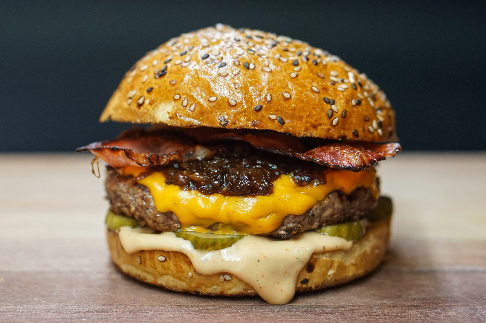

Cheeseburger

A very tasty Cheeseburger
Ingredients
- Ground Chuck
- Good buns
- Cheddar cheese
- Red Onions
- Tomatoes
- Mayo
- Ketchp
- Lettuce
How to Make a Damn Good Cheeseburger Step-by-Step
You can say whatever you want but this is my Perfect Burger recipe and how to make it
- Take your Ground Chuck and mix it with a little bit of salt and seasonings of your choice
- Separate the meat in equal parts for the amount of burgers you're cooking
- Fry these bad boys in a skillet (or grill) with a pinch of salt
- Once they start to sweat on one side, turn them and lay on some of that cheese on top
- If you're frying it on a skillet, put some water on it and close it with a lid so the cheese properly melts
- Lay your buns on the plate with some Mayo on the bottom bun.
- Put your hamburger FIRST right after the Mayo (this is very important).
- On top of the hamburger put a slice of tomato and the red onions, topped off with some ketchup.
- Lay your lattuce after that (If you're in the mood for some salad)
- Close it off and enjoy.
The order on how the ingredients are layed out within the buns are crucial to the user experience of the one's eating the Cheeseburger, as in this way the Burger will maintain its intergrity and won't fall apart after a few bites